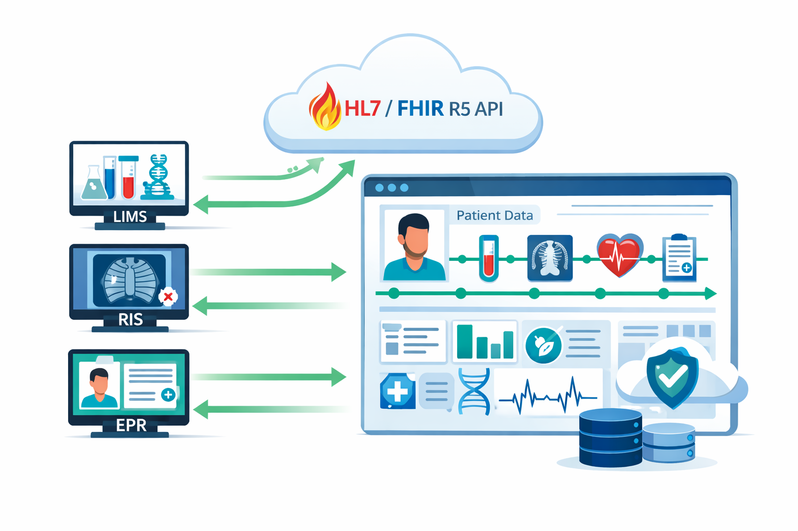
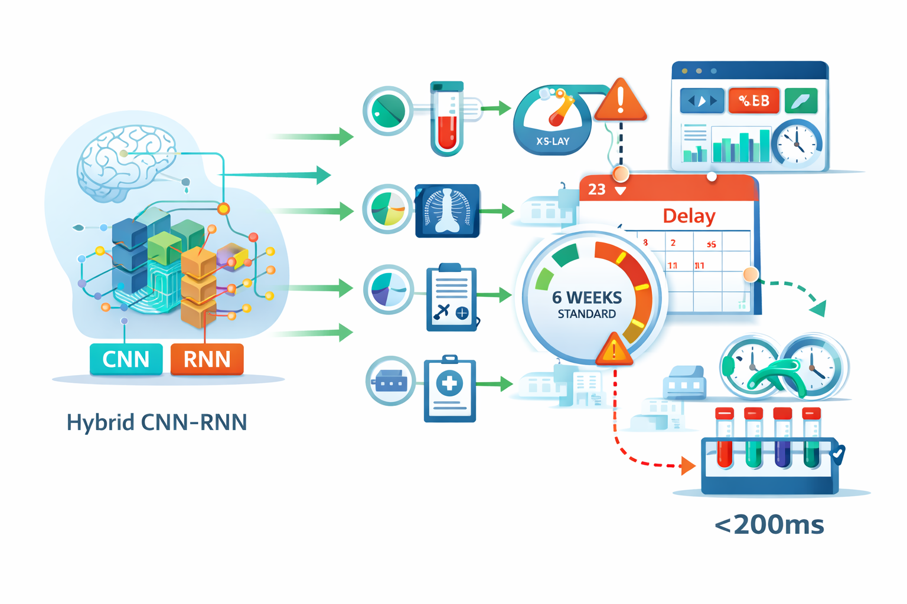
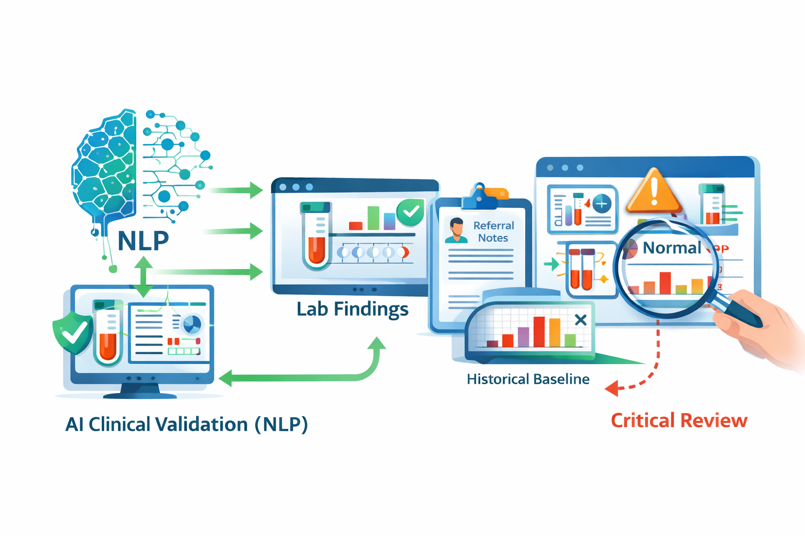
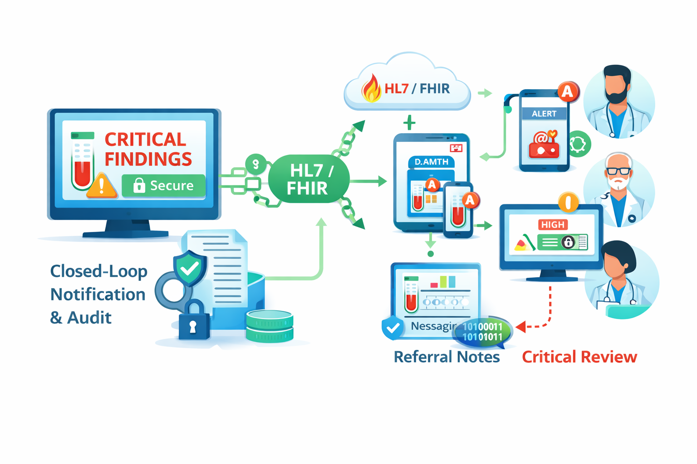
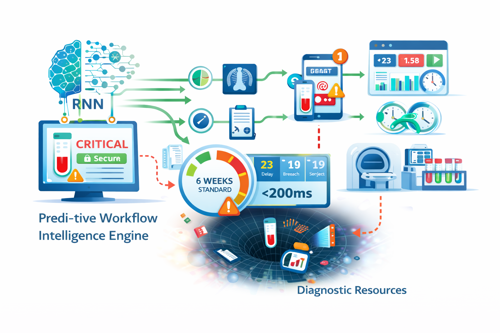
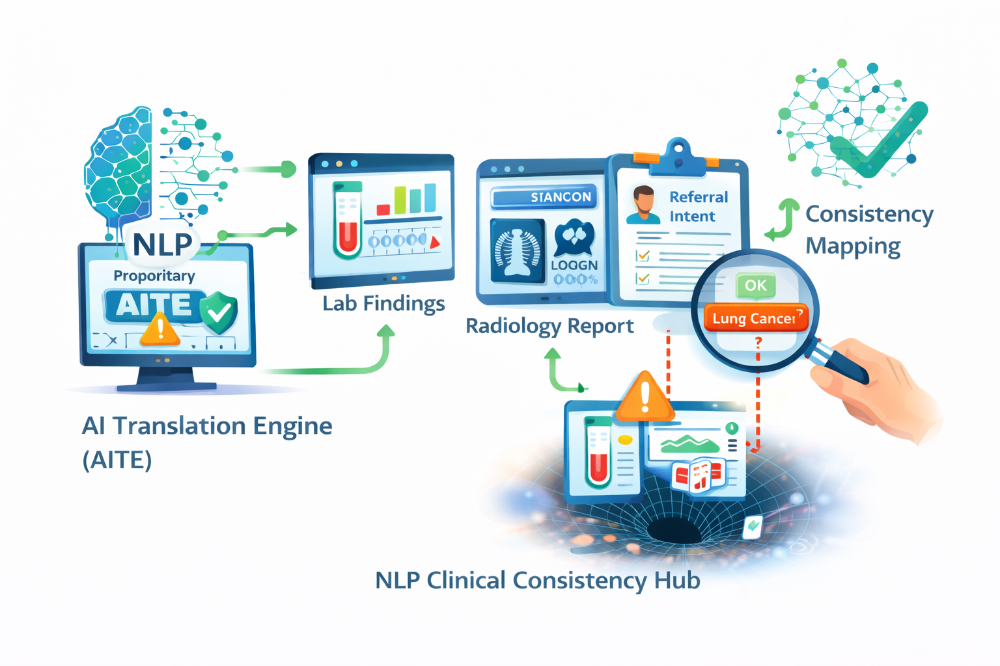
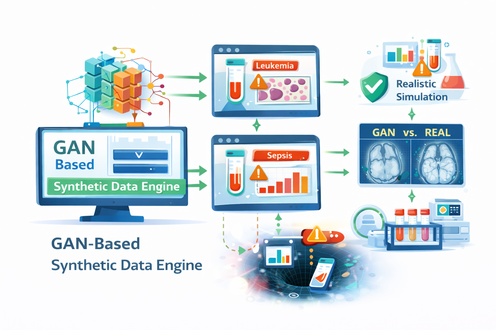
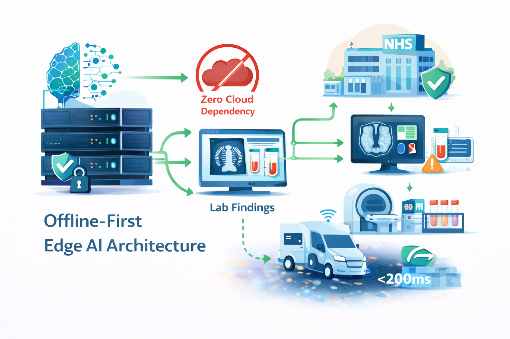
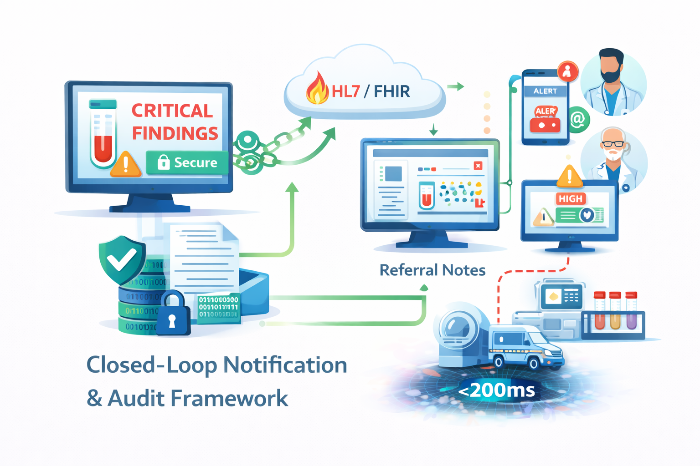
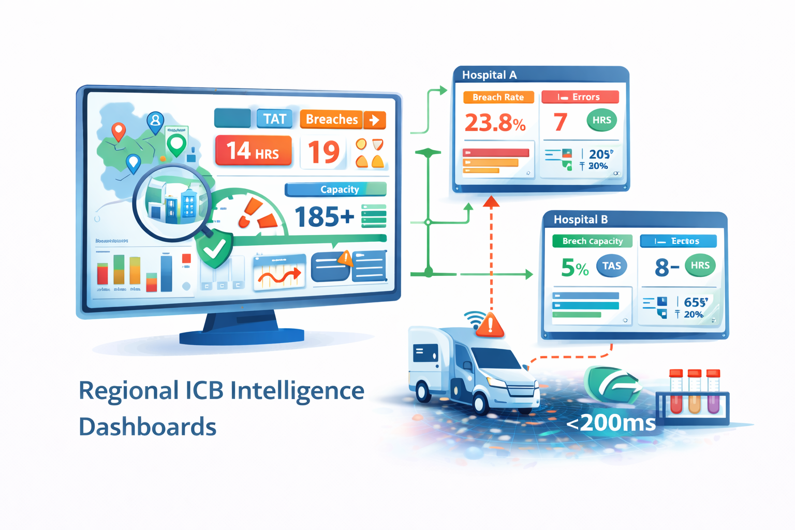

NexusDiag AI bridges the critical communication gap between diagnostic laboratories, imaging departments, and front-line clinical staff — synchronizing LIMS and PACS in real time to eliminate the UK's 1.8 million patient diagnostic backlog with sub-200ms predictive intelligence.
NexusDiag AI introduces an innovative "Workflow Intelligence" platform that bridges the critical communication gap between diagnostic laboratories, imaging departments, and front-line clinical staff. By combining advanced computer vision, temporal predictive analytics, and NLP, the system enables real-time synchronization of LIMS and PACS with primary clinical workflows.
Unlike static reporting tools or traditional administrative tracking, NexusDiag AI functions as a proactive middleware infrastructure — processing diagnostic metadata with sub-200ms latency via secure Edge AI gateways integrated within hospital firewalls.
Fully aligned with the NHS 10-Year Health Plan, DTAC 2.0, and the Data Use and Access Act 2025 — transforming diagnostic centres from overwhelmed data processors into highly efficient, predictive hubs of clinical care.
Simran Kaur brings over five years of specialized experience in the diagnostic healthcare sector, bridging clinical laboratory science and strategic business management.
Holding a Bachelor of Medical Science (Laboratory Technology) and an MBA from the University of Cumbria, her dual expertise ensures NexusDiag AI is built with clinical integrity while navigating the complex procurement pathways of the UK healthcare market.
Her front-line experience across pathology, radiology, and pharmaceutical workflows directly informs the platform's AI Translation Engine (AITE) — achieving 96% accuracy in clinical intent normalization.
Contact the Founder →Every diagnostic test order passes through NexusDiag AI's four-stage intelligence pipeline — converting fragmented hospital data into real-time workflow oversight, predictive alerts, and closed-loop clinical notifications.

The platform connects seamlessly to existing LIMS, RIS, and EPR systems via HL7/FHIR R5 APIs — creating a unified patient diagnostic timeline without requiring hardware changes or new infrastructure investment.

The hybrid CNN-RNN engine analyses diagnostic throughput in real time, identifying tests at risk of breaching the 6-week NHS standard before delays occur — enabling proactive resource reallocation with sub-200ms latency.

The NLP layer cross-references laboratory findings with original referral notes, flagging interpretive inconsistencies — such as "normal" results representing significant deviations from a patient's historical baseline — for immediate secondary review.

Critical findings instantly notify referring clinicians via secure HL7/FHIR channels, bypassing administrative delays. Every interaction is recorded on an encrypted, legally defensible audit trail — reducing clinical negligence liability for NHS Trusts.
The NexusDiag AI framework is powered by five distinct clinical intelligence innovations — each a defensible layer in the UK's first proactive diagnostic middleware platform, purpose-built for NHS-grade operational environments.

Real-time identification of tests likely to breach the 6-week NHS diagnostic standard.
Uses RNN and LSTM networks to interpret the "velocity" of diagnostic samples and scans — identifying clinical black holes where tests may be stalled. Enables sub-200ms resource reallocation before NHS 6-week target breaches occur, shifting diagnostic management from reactive to proactive.

Proprietary NLP trained on UK clinical shorthand — cross-referencing reports with referral intent.
Unlike generic NLP, the AITE (AI Translation Engine) is purpose-built to cross-reference laboratory findings and radiology report text with the original clinical referral intent. "Consistency Mapping" logic flags interpretive inconsistencies that deviate from a patient's longitudinal baseline — addressing 25% of diagnostic errors linked to interpretive failure.

Generative Adversarial Networks creating high-fidelity synthetic clinical datasets for rare pathologies.
Overcomes the critical data scarcity problem for rare diagnostic conditions — generating realistic simulations of rare laboratory "red flags" so the AI continuously refines validation accuracy without requiring access to sensitive patient PII. Maintains 94% validation precision across regional variations in diagnostic shorthand and equipment outputs.

Hospital-grade diagnostic tracking that operates locally within Trust firewalls — zero cloud dependency.
Critical anomaly detection and workflow tracking run locally on hospital servers, ensuring 95% functionality during NHS network downtime. No Personal Identifiable Information leaves the secure Trust network, exceeding GDPR and NHS Data (Use and Access) requirements. Maintains sub-200ms latency even in rural diagnostic hubs and mobile MRI units.

Automated encrypted audit trails eliminating the 24% of Missed Diagnostic Opportunities from follow-up failures.
Upon detection of a critical finding, the system bypasses administrative delays — instantly notifying referring clinicians via secure HL7/FHIR channels. Generates encrypted, legally defensible audit trails that track the result-to-action timeline, directly reducing clinical negligence liability for healthcare trusts and supporting DCB0129 compliance.

High-level KPI visibility across entire Integrated Care Board regions — balancing diagnostic capacity in real time.
Provides ICBs with high-level analytical tools for regional efficiency: real-time visibility into turnaround times (TAT), breach rates, and error frequencies across entire healthcare regions. Identifies when one hospital's lab is overwhelmed and suggests routing samples to under-utilised nearby sites — supporting the NHS 10-Year Health Plan digital vision.
A NexusDiag AI Professional subscription represents less than 5% of the cost of a single diagnostic negligence claim — delivering continuous clinical oversight and regulatory compliance year-round.
For GP practices, small diagnostic labs and community clinics requiring core workflow tracking.
£199For Community Diagnostic Centres, mid-sized groups and NHS Trust departments.
£499For NHS Acute Trusts, ICBs and private hospital groups requiring full EHR integration.
CustomWhether you are an NHS Trust, Community Diagnostic Centre, Integrated Care Board, private imaging group, pharmaceutical research lab, or technology integration partner — we would like to hear from you. Contact us to arrange a demonstration, discuss pilot opportunities, or explore licensing and partnership options.